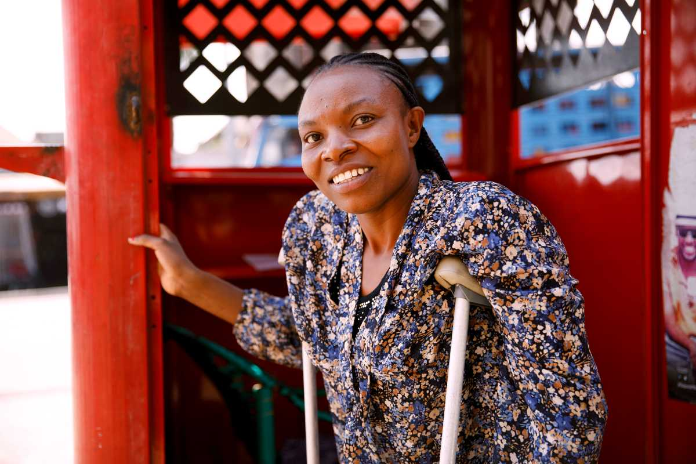
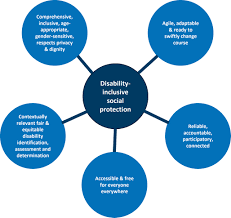

Only 61 per cent of prime working-age women are in the labour force, compared to 90.6 per cent of
men. Furthermore, nearly 60 per cent of women worldwide are in the informal economy, a figure that
skyrockets to more than 90 per cent in low-income countries. A vast proportion of them hold unstable,
low-paid, and unskilled jobs that lack social security nets as domestic workers, construction workers,
or seasonal agricultural labourers. Investing in skilled, decent jobs for women has a ripple effect with
broader benefits to society that not only promote gender equality but also drive sustainable economic
development for all.
The Skill Impact Bond is a pioneering USD 14.4 million project in India designed to boost women's access
to decent work. Around 50,000 people (at least 60 per cent of whom are women) will be equipped with
employability skills, including digital and financial literacy, language training, and industry-specific
courses.

Inclusive Social and Legal Protection:
Expanding women's access to formal, decent jobs and to social welfare programmes—such as
healthcare, pensions systems that recognize unpaid care work, and full maternity protection—lays
the foundation for economic empowerment. It addresses the root causes of inequality while also shielding
women from bias, gender-based discrimination, and violence in the workplace.
In Germany, the Initiative for Global Solidarity has helped 300,000 workers (60 per cent women) to access
improved complaint and remedy processes when they experience discrimination and violence in the workplace.
More than 1,500 workers have received training to support these efforts and some 200,000 women from the
textile, garment, and electronics sectors can now address workplace harassment and gender discrimination
issues.

Creating a Caring Society:
Women bear the brunt of most unpaid care and domestic work, spending 2.8 more hours than men on unpaid care. As a result, women and girls have less time and opportunities to access education and paid work, or to participate in social and political life. This in turn keeps them poorer than men. Investing in care services, such as provision of daycare and elderly care, could create almost 300 million jobs.
In 2023, Kazakhstan extended childcare payments for both working and non-working mothers from 1 to 1.5 years and increased social benefits for people with disabilities by 14.5 per cent. This improved support system helped nearly 700,000 parents over the year.
Transitioning to Sustainable Economies:
As the world pivots towards renewable energy solutions, women are vastly underrepresented in this sector with just 31 per cent of jobs filled by women. The world's global south is overwhelmingly affected by the impacts of climate change and women in these regions, and beyond, must be included in the transition towards an inclusive economy that cares for both people and the planet.
The DESFERS project in the Sahel region—Senegal, Mali, and Niger—helps women transition from informal jobs to careers in renewable energy. It offers technical training, funding support, and job opportunities while tackling gender inequality and social barriers. The project is supporting 4,500 women-owned businesses in sustainable energy, training 7,000 female entrepreneurs, and facilitating access to renewable energy and financing for 21,000 women.
Ending Gender-Based Violence:
Gender based-violence is the most pervasive human rights violation affecting one in three
women worldwide. Tackling violence against women and girls is key to creating stable societies.
When women feel safe, they are more likely to participate in the economy and contribute to their
communities' development.
The Stepping Stone Grassroots Women group, part of the Huairou Commission,
is tackling this issue by empowering women traders and calling for changes to protect women's
rights and dignity. The project has helped 16 female traders establish women-only fishponds,
disrupting traditional power dynamics and boosting women's economic independence.